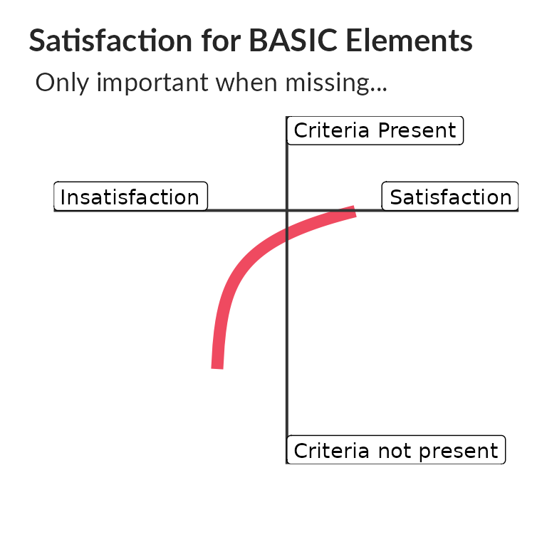
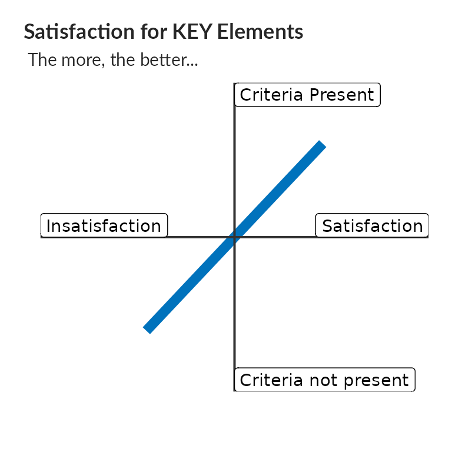
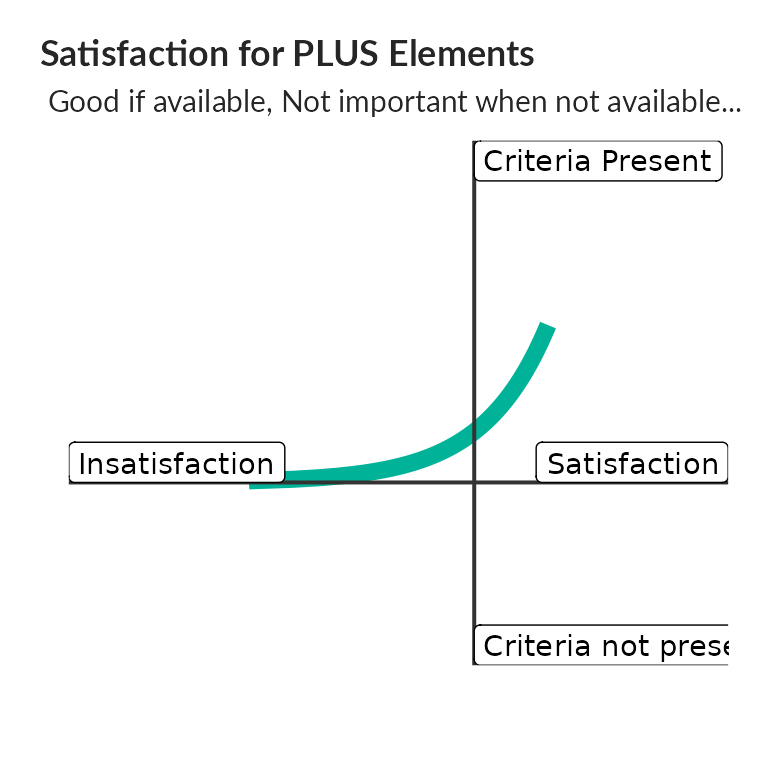
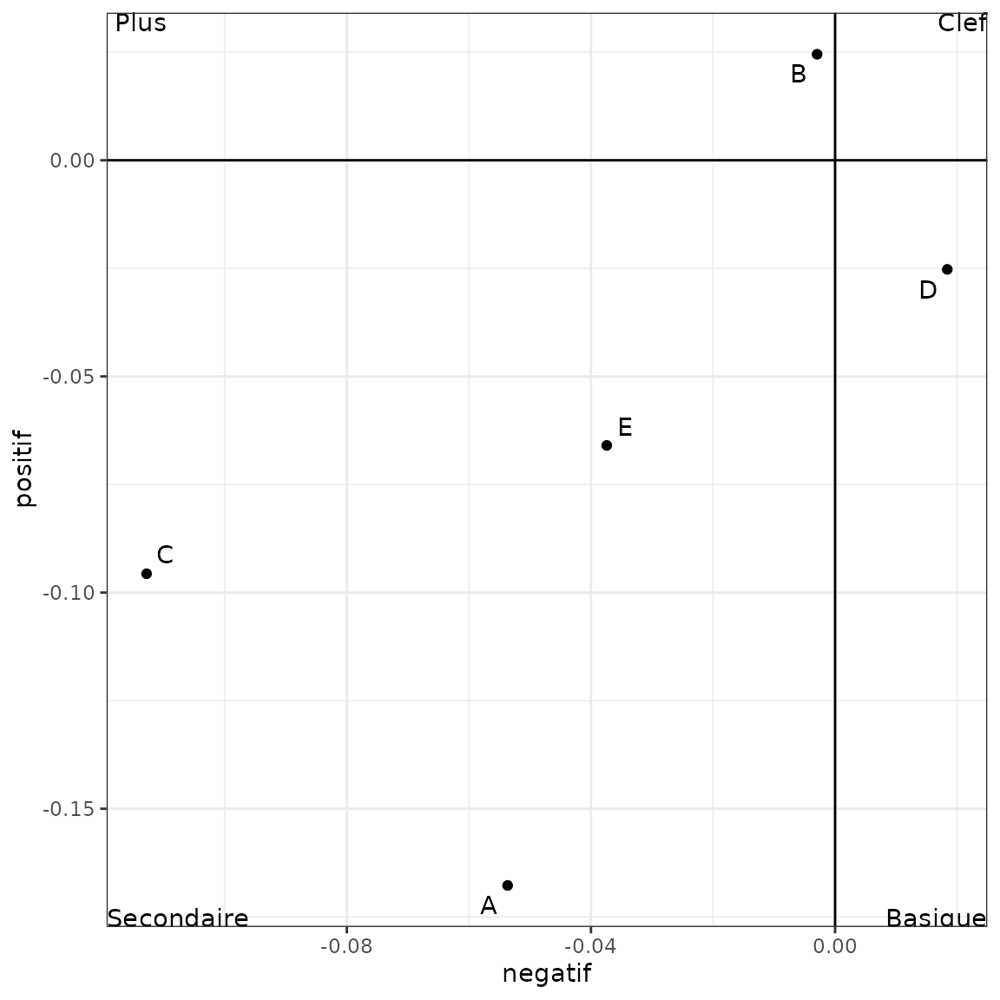
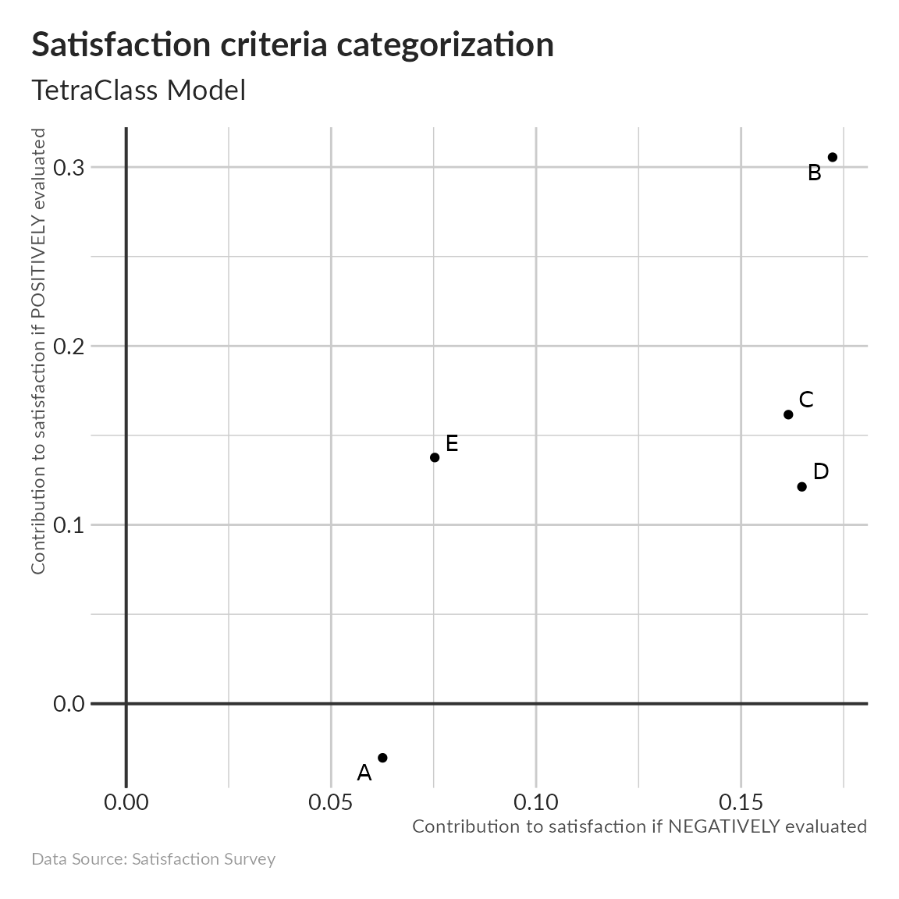
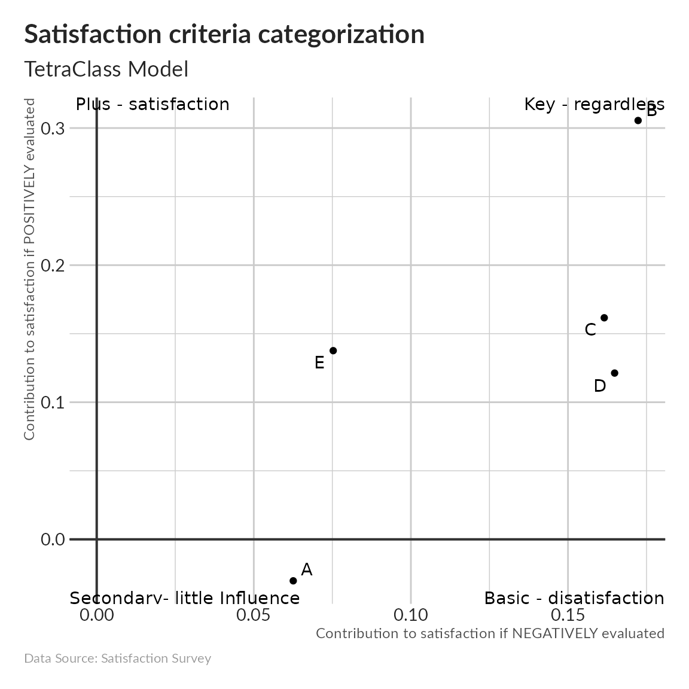
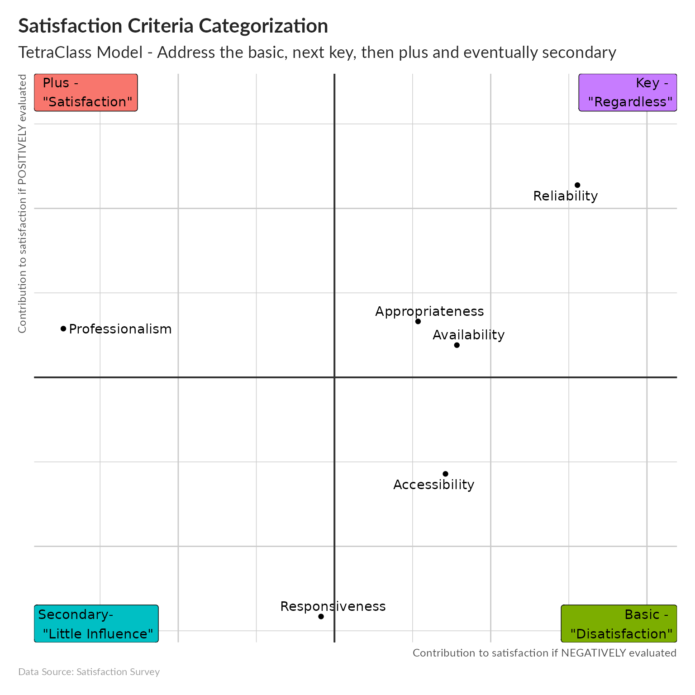

how-to.RmdSatisfaction surveys are part of the toolbox of both public organizations and private companies, whether it is improve their accountability to taxpayers or affected people (in case of humanitarian support) or to increase the customer loyalty. Indeed, increasing satisfaction is important to increase the effectiveness.
Satisfaction is influenced by both the contact with the service provider, and personal outcomes. Improving satisfaction often:
“Entails a massive cultural shift away from what is convenient for the organization to what is needed by the service users”
– Elements of a Customer Satisfaction System
The Llosa’s tetraclass model can be used for a fine measurement of user satisfaction. Such model were demonstrated specifically relevant for instance for the the management of the patient satisfaction in the pharmacies or the contributions of elements of service to satisfaction, commitment and consumers’ share of purchase.
The element of services provided by an organization or a company can be classified into one of 4 categories, according to the way in which they affect satisfaction:




Understanding how different elements contribute to the global satisfaction of end users allow to prioritize which one should be fixed first: Address firs the basic to minimize dissatisfaction, then improve the key elements. Once those two first categories have been improved focus on plus elements and in case, all the above are ok, work on the secondary elements.
The points above inform how a satisfaction survey shall be developed.
The first part of the questionnaire measures the global satisfaction of the user.
In the second part, every respondent is requested to evaluate the service criteria on a 5 points semantic-differential scale.
Criteria can include:
Accessibility:
Availability:
Appropriateness:
Responsiveness:
Reliability:
Empathy:
Professionalism:
Additional questions are focusing on different characteristics as:
# generate an example dataset with 150 respondant
base <- gen_satis(150)
#prepare the dataset
base1 <- prepare_base(base)
dataset <- base1
# construct the Llosa matrix
# gen_llosa(base,
# annotate = TRUE,
# annotatetext = c("Secondaire"," Plus","Basique","Clef"))
to.plot <- res$row$coord[,1,drop=FALSE] %>%
as.data.frame() %>%
rownames_to_column() %>%
separate(rowname,c("critere","sens")) %>%
reshape2::dcast(critere~sens,value.var="Dim 1")
#peut etre pas le plus intelligent, mais de toutes facon cela n'arrivera jamais dans une vrai enquete.
to.plot[is.na(to.plot)] <- 0
NN <- ggplot(data=to.plot ,
aes(reorder(critere, negative),negative)) +
geom_bar(stat="identity")+
coord_flip() +
labs(title = "Contribution Level to satisfaction ",
subtitle = "When NEGATIVELY evaluated",
x = "Criteria",
y = "Contribution ",
caption = "Data Source: Satisfaction Survey " ) +
unhcRstyle::unhcr_theme(base_size = 11) +
theme(#axis.text.x = element_blank(),
# legend.position = "none",
panel.grid.major.y = element_line(color = "#cbcbcb"),
panel.grid.major.x = element_line(color = "#cbcbcb") ) +
#geom_hline(yintercept = 0, size = 0.7, colour = "#333333") +
geom_vline(xintercept = 0, size = 0.7, colour = "#333333")
#theme_bw()
NN
PP <- ggplot(data=to.plot ,
aes(reorder(critere, -positive),positive)) +
geom_bar(stat="identity")+
coord_flip()+
scale_fill_manual(values = c("FALSE" = "#EF4A60", "TRUE" = "#00B398")) +
labs(title = "Contribution level to satisfaction ",
subtitle = "When POSITIVELY evaluated",
x = "Criteria",
y = "Contribution ",
caption = "Data Source: Satisfaction Survey " ) +
unhcRstyle::unhcr_theme(base_size = 11) +
theme(#axis.text.x = element_blank(),
# legend.position = "none",
panel.grid.major.y = element_line(color = "#cbcbcb"),
panel.grid.major.x = element_line(color = "#cbcbcb") ) +
#geom_hline(yintercept = 0, size = 0.7, colour = "#333333") +
geom_vline(xintercept = 0, size = 0.7, colour = "#333333")
#theme_bw()
PP
By defining the important services for the area of interest and applying a correspondence analysis towards the data processing, a simple visual map is produced pointing at the place of the concrete services elements within the above four groups of basic, secondary, plus and key services.
to.plot2 <- to.plot
## adjust results in relation with global satisfaction from CA
to.plot2$negative <- to.plot2$negative - res$col$coord["negative",1]
to.plot2$positive <- -(to.plot2$positive - res$col$coord["positive",1])
p <- ggplot(data=to.plot2,
aes(x = negative,
y = positive)) +
geom_point()+
geom_hline(aes(yintercept=0))+
geom_vline(aes(xintercept=0))+
geom_text_repel(aes(label=critere)) +
labs(title = "Satisfaction Criteria Categorization",
subtitle = "TetraClass Model - Address the basic, next key, then plus and eventually secondary",
x = "Contribution to satisfaction if NEGATIVELY evaluated",
y = "Contribution to satisfaction if POSITIVELY evaluated",
caption = "Data Source: Satisfaction Survey " ) +
unhcRstyle::unhcr_theme(base_size = 11) +
theme(axis.text.x = element_blank(),
axis.text.y = element_blank(),
legend.position = "none",
panel.grid.major.y = element_line(color = "#cbcbcb"),
panel.grid.major.x = element_line(color = "#cbcbcb") ) +
geom_hline(yintercept = 0, size = 0.7, colour = "#333333") +
geom_vline(xintercept = 0, size = 0.7, colour = "#333333")
#annotatetext = c("Secondaire"," Plus","Basique","Clef")
annotatetext = c("Secondary- \n \"Little Influence\"",
" Plus - \n \"Satisfaction\"",
"Basic - \n \"Disatisfaction\"",
"Key - \n \"Regardless\"")
annotations <- data.frame(
xpos = c(-Inf,-Inf,Inf,Inf),
ypos = c(-Inf, Inf,-Inf,Inf),
annotatetext = annotatetext,
coul = c("#666666","#0072BC", "#00B398","#EF4A60" ),
hjustvar = c(0,0,1,1) ,
vjustvar = c(0,1.0,0,1))
p <- p +
geom_label(data = annotations,
aes(x=xpos,
y=ypos,
hjust=hjustvar,
vjust=vjustvar,
label=annotatetext,
fill = factor(coul)))
p
The changes in terms of satisfaction shall be also separately statistically analyzed in relation to respondents’ characteristics - agege, gender, education, etc. - using the 2-tail z-test (Interval Estimate of Population Mean with Known Variance) analysis assuming the two proportions are equal.
z.test = function(x,mu,popvar){
# The first argument is the vector of data,
# the second is the population mean, and
# the third is the population variance.
one.tail.p <- NULL
z.score <- round((mean(x)-mu)/(popvar/sqrt(length(x))),3)
one.tail.p <- round(pnorm(abs(z.score),lower.tail = FALSE),3)
cat(" z =",z.score,"\n",
"one-tailed probability =", one.tail.p,
"\n if p < 0.05, the hypothesis is rejected.\n ",
"two-tailed probability =", 2*one.tail.p )
}The tetraclass model has the following advantages:
It is based on clients own experiences of services and not a simulation,
It allows to develop visual contribution charts, establishing the boundaries between categories of services elements clearly and not arbitrarily,
It weight weighting criteria on the basis of their positive or negative performance.
As demonstrated here, using such model can be fairly simple and can greatly contribute to the improvement of both service effectiveness and accountability.